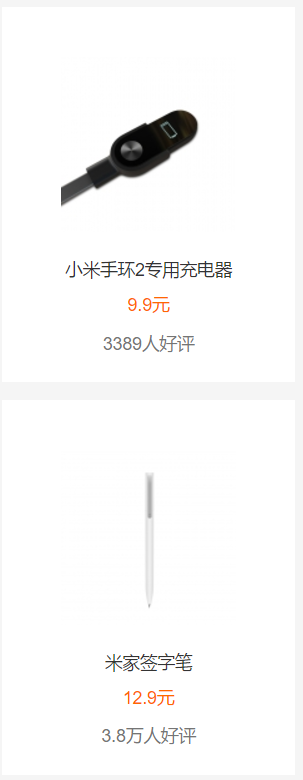
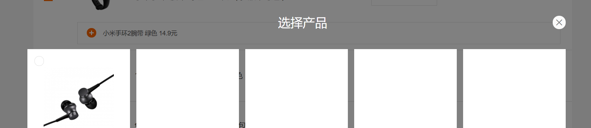

购物车的编写
遇到问题
这个牵涉最多的一个计算量，其中和商品数量的加减，和商品的增删,商品的勾选，以及加购区，推荐商品的增删等等都有关联
1)商品数量加减是在判断商品是否选择的前提下，加减数量才有效
2)商品是否勾选的css是动态加载的，这时就会存在逻辑先后问题
3)商品的增删每次都需要调用算总价的函数，比较麻烦并且容易忘记
遇到问题
删除操作
1）当删除商品后购物车页面是否跳转到空购物车
2)删除一些商品后不能构成包邮时需要隐藏（没有实现，在小组中已删除）
遇到问题


添加商品操作
1）在加购区和购物车区两者商品动态变化不能动态的绑定在一起，比如删除购物车中的一行，加购区重新恢复
2)选择产品框中一个div会有多个操作绑定，这时一个操作的结果会影响另一些操作
遇到问题
勾选操作
1）有两种选择框，全选和部分选会相互影响，部分勾选又有两种状态，可点击和不可点击
2）勾选框多种css的变化也让jq中定位和筛选存在困难
学习总结
css:刚开始模仿网页时，感到手忙脚乱的，一个是因为网页的css是经过整合的，那么有些css不仅仅会在当前的div中使用，还有作用在另外同样效果的div上，另一个是因为许多css之间是通过后台动态加载进来的，不过也是在不断的修以及改自己css代码的时候，也学会了初步的css整合，使得css更加的简洁，前后对比整合过程中都是一次在学习，并且学会阿里图标库的加载等小知识
jq:虽然最后组长没有看懂我的jq代码，但是第一次编写相关性较强的jq也是对自己的一个挑战，对于jq的使用更加的熟练了，后来对比组长和我的jq时，也发现了自己的不足，第一我使用jq的选择器时，使用了许多的parent，childen等间接定位，而不是通过class和id定位，所以会使得他人看我的jq代码时会觉得十分的困难，第二逻辑性不强，重复代码较多，使用了较多的单个点击事件，而不是用一个点击事件绑定一类按钮，这样增加了自己的代码难度，他人看代码时更加困难